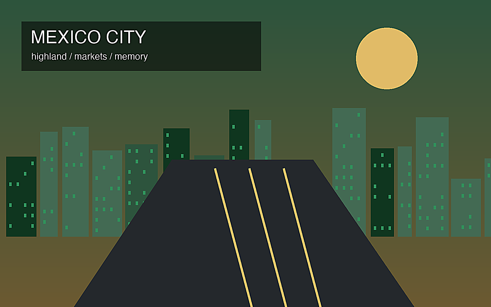

地政学
アステカの湖上都市、スペイン植民地、現代国家首都が高原盆地に重なる。

🇲🇽 メキシコ / 北米 / World City Atlas
高原盆地に広がる歴史首都。世界都市として、経済規模だけでなく、地理、産業、宗教文化、暮らし、観光を分けて読みます。
都市の骨格
アステカの湖上都市、スペイン植民地、現代国家首都が高原盆地に重なる。

アステカの湖上都市、スペイン植民地、現代国家首都が高原盆地に重なる。
行政、金融、大学、メディア、食品、デザイン、観光が周辺の製造業と結びつく。
カトリックを基盤に、先住民信仰、聖人崇敬、世俗文化が重層化している。
ソカロ、テンプロ・マヨール、チャプルテペック、コヨアカン、市場、地下鉄が都市を読む入口になる。
Geography
都市の経済力は、地図上の位置、港湾、鉄道、空港、河川、周辺都市との関係から生まれます。
アステカの湖上都市、スペイン植民地、現代国家首都が高原盆地に重なる。
メキシコシティを単体の市街地としてではなく、周辺の住宅地、産業地、物流施設、教育機関と接続した都市圏として見ると、GDPの大きさが日々の通勤、土地利用、観光、文化施設の配置にどう表れているかが分かります。
行政、金融、大学、メディア、食品、デザイン、観光が周辺の製造業と結びつく。
この都市では、華やかな中心業務地区の背後に、清掃、建設、配送、調理、介護、教育、保守、警備といった日常的な労働があります。都市の経済規模を見るときは、数字だけでなく、その数字を支える人と場所を同時に見る必要があります。
Industry
主力産業だけでなく、周辺の小さな仕事が都市を毎日動かしています。
Culture
宗教施設、祭礼、市場、劇場、大学、移民地区は、都市の経済とは別の時間を保存します。
カトリックを基盤に、先住民信仰、聖人崇敬、世俗文化が重層化している。
ソカロ、テンプロ・マヨール、チャプルテペック、コヨアカン、市場、地下鉄が都市を読む入口になる。